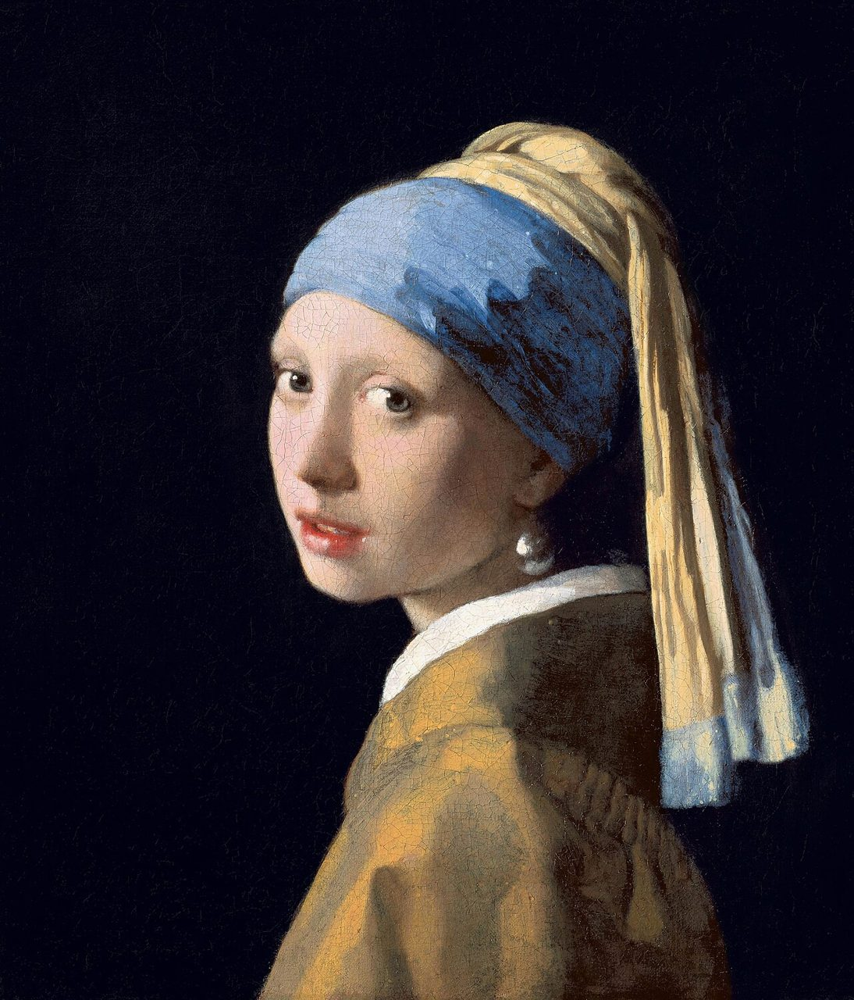

藝術101名畫背後的故事 EP03
戴珍珠耳環的少女
維梅爾・約 1665

那顆珍珠，可能根本不是珍珠。
她是誰？沒人知道
維梅爾大約在1665年畫下這位轉頭的少女。她不是肖像，是當時荷蘭流行的人物頭像習作（tronie），模特兒的身分至今不明。
珍珠太大了
收藏這幅畫的莫瑞泰斯美術館說，這顆珍珠大到不像真的，可能是上了亮光漆的玻璃仿珍珠，也可能是維梅爾想像出來的。畫面上，連掛耳環的鉤子都沒有。
兩筆畫完一顆珍珠
湊近看，珍珠只有兩筆：左上的亮點是窗光，下緣的柔白是衣領反光。你的眼睛自己把它補成了一顆完整的珍珠。
下次看到它，先看這裡
左耳下方的珍珠 左上亮點加下緣白領反光，只兩筆
微張的嘴唇 唇上也點了小小的濕潤高光
藍色頭巾 藍色常被認為用了昂貴群青
作品資料
維梅爾（Johannes Vermeer）
《戴珍珠耳環的少女》Girl with a Pearl Earring，約 1665
畫布、油彩 44.5 × 39 公分
荷蘭海牙 莫瑞泰斯皇家美術館（Mauritshuis）
《戴珍珠耳環的少女》Girl with a Pearl Earring，約 1665
畫布、油彩 44.5 × 39 公分
荷蘭海牙 莫瑞泰斯皇家美術館（Mauritshuis）